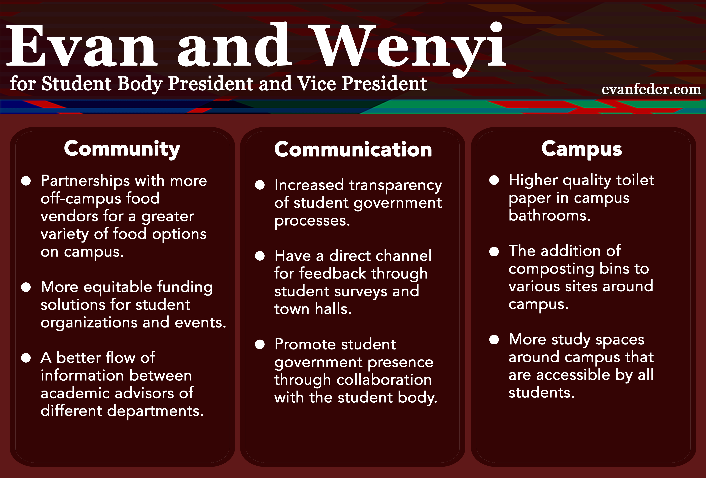

ABOUT US
Evan Feder
Hey, I’m Evan, and I’m running to be your next Student Body President! I am a sophomore studying Information Systems and Statistics & Machine Learning. I’ve been involved in student government for the past two years, this year as Student Body VP of Finance and the previous as Vice Chair of the JFC. I would love to continue working to make student government represent the student body in the best way possible.
Outside of my student government work, I am also a member of the Business Technology Group, Scottie Ventures, and several other organizations. I’m also a black belt in Shaolin Kung Fu and have been playing the drums for eight years.
I love critically over-analyzing the latest major box office films and developing tech startup projects with friends. You can catch me on campus jamming out to early-2000s throwbacks while wondering why my code doesn't work. Always feel free to reach out at anytime to talk or chat about the issues on campus that are important to you!
Outside of my student government work, I am also a member of the Business Technology Group, Scottie Ventures, and several other organizations. I’m also a black belt in Shaolin Kung Fu and have been playing the drums for eight years.
I love critically over-analyzing the latest major box office films and developing tech startup projects with friends. You can catch me on campus jamming out to early-2000s throwbacks while wondering why my code doesn't work. Always feel free to reach out at anytime to talk or chat about the issues on campus that are important to you!
Wenyi Zhu
I am a Tepper sophomore on the track of a career in finance. I have been involved in Student Senate, various finance organizations, and Greek life as a sister of Delta Gamma.
All of my campus involvements have shown me the importance of mentorship and giving back to the community - I've grown tremendously as a professional and as a person from the guidance that the people in these organizations provided me. Therefore, I decided to take on the role of being a senator my freshman spring to work toward my goal of giving back to campus. Senate has shown me first hand how much of a change we can make toward bettering student life in every aspect conceivable.
Evan and I are running for SBP & SBVP because both of us believe in the importance of giving back to the community and helping facilitate the bettering of student life.
All of my campus involvements have shown me the importance of mentorship and giving back to the community - I've grown tremendously as a professional and as a person from the guidance that the people in these organizations provided me. Therefore, I decided to take on the role of being a senator my freshman spring to work toward my goal of giving back to campus. Senate has shown me first hand how much of a change we can make toward bettering student life in every aspect conceivable.
Evan and I are running for SBP & SBVP because both of us believe in the importance of giving back to the community and helping facilitate the bettering of student life.
PLATFORM

Polls open on:
3/29/18
Email Evan:
efeder@andrew.cmu.edu
Email Wenyi:
wenyiz@andrew.cmu.edu
SPECIAL THANKS TO:
Joe Horowitz, Art and Graphics
Iris Pei and Others, Photography
Iris Pei and Others, Photography